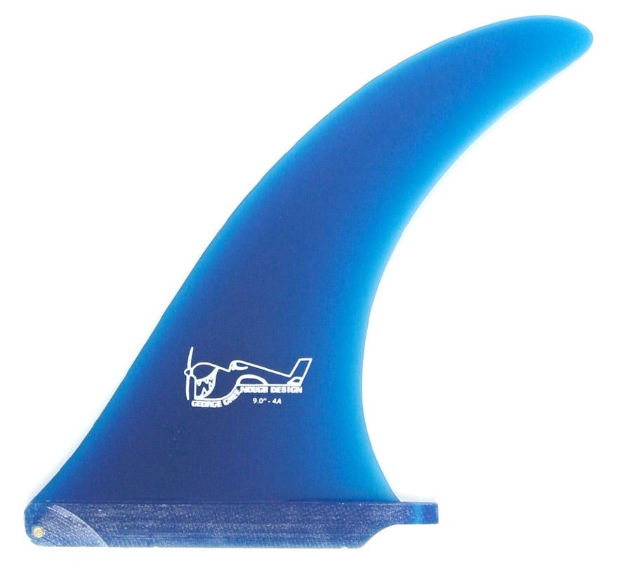

Single Fins
Greenough 4a
California Classic
Herritage
D-Fin
There is a reason this is the most iconic, functional and versatile single fin available, it works on just about anything! The Greenough 4-A has been our bread and butter for close to 40 years now, and is still the most popular single fin design there is.
A truly well-balanced fin, the full base coupled with the tapering, moderately flexible tip provides a solid amount of drive off the bottom, and an acute responsiveness through arcing turns. Designed for both speed generation and spending time surfing in the pocket, the 4-A is a fin that will hold when you need it to and release when the time is right.

Sizes:
9" 9.75" 10.5"
E-Glass & Volan:
E-glass has excellent flex characteristics and performance longevity, while featuring the bonus of outstanding color vibrancy that allows for the variety of colors we offer.
Each of our volan fins is cut from the highest quality fiberglass and perfectly aligned for optimal flex characteristics. These limited supply fins flex from the body of the fin thereby producing increased speed and projection off the bottom and through turns.
Made in Santa Barbara